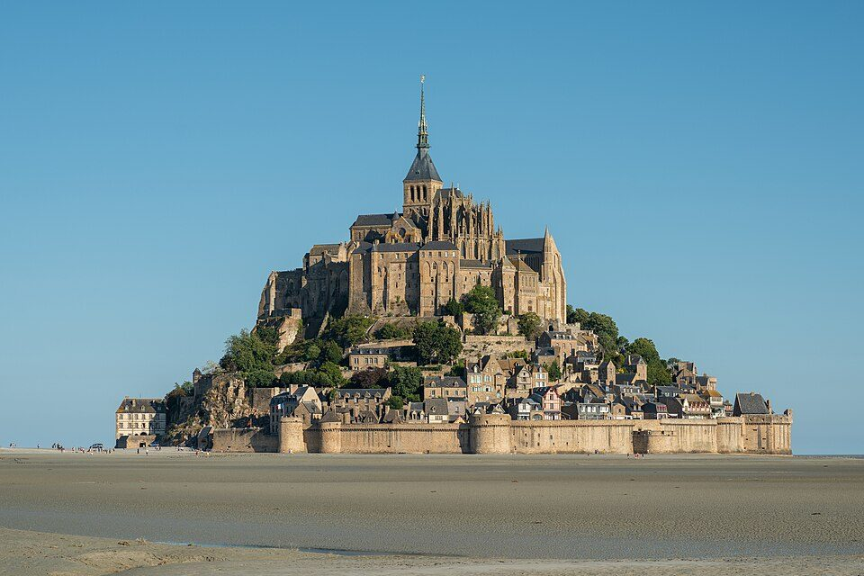

Corrientes y mareas
Ríos dentro del mar que reparten el calor por el planeta y mareas que suben y bajan dos veces al día empujadas por la Luna.

.jpg){kind=link}
El agua del mar nunca está quieta. Se mueve en olas, empujada por el viento; sube y baja con las mareas, atraída por la Luna; y circula en enormes corrientes que recorren el planeta entero y reparten el calor entre el ecuador y los polos.
Las corrientes de superficie
Los vientos constantes, junto con la rotación de la Tierra, ponen en marcha grandes remolinos en cada océano llamados giros. La más famosa de sus corrientes es la corriente del Golfo, que nace en el golfo de México y cruza el Atlántico hacia Europa. Transporta más agua que todos los ríos del mundo juntos y lleva calor tropical hacia el norte. Gracias a ella, en Irlanda o Noruega hace mucho menos frío que en Canadá a la misma latitud.
La cinta transportadora
Hay además una circulación profunda, más lenta, movida por diferencias de temperatura y de sal. En el Atlántico Norte el agua se enfría, se vuelve más densa y se hunde; luego recorre el fondo de los océanos hacia el sur, rodea la Antártida y sube de nuevo en el Índico y el Pacífico. Es la cinta transportadora oceánica: una gota tarda alrededor de 1.000 años en completar el viaje. Los científicos vigilan si el deshielo de Groenlandia, que añade agua dulce, la está debilitando.
El Niño y La Niña
Cada pocos años, las aguas del Pacífico ecuatorial se calientan más de lo normal frente a Sudamérica: es El Niño, llamado así por los pescadores peruanos porque aparecía por Navidad. Provoca sequías en Australia, lluvias torrenciales en Perú y sube la temperatura media del planeta. Su fase contraria, más fría, es La Niña.
Las mareas
Dos veces al día, el nivel del mar sube y baja. La culpa es sobre todo de la Luna: su gravedad tira del agua y forma un abultamiento en el lado de la Tierra que mira hacia ella y otro en el lado opuesto. Mientras la Tierra gira, cada costa pasa por los dos abultamientos cada 24 horas y 50 minutos.
- Mareas vivas: con luna nueva y luna llena, el Sol y la Luna se alinean y suman sus fuerzas. Las mareas son más grandes.
- Mareas muertas: en cuarto creciente y menguante, tiran en ángulo recto y las mareas son más pequeñas.
Las mayores mareas del mundo se dan en la bahía de Fundy, en Canadá, con hasta 16 metros de diferencia. En Mont Saint-Michel, en Francia, el mar sube tan deprisa que el monasterio pasa de estar rodeado de arena a convertirse en una isla. En el Mediterráneo, en cambio, las mareas apenas se notan: unos pocos centímetros.
Gibraltar, una puerta con dos corrientes
Como el Mediterráneo pierde mucha agua por evaporación, por el estrecho de Gibraltar entra en superficie agua atlántica, más ligera, mientras que por el fondo sale agua mediterránea, más salada y densa. Durante la Segunda Guerra Mundial, algunos submarinos aprovechaban estas corrientes para cruzar el estrecho con los motores apagados y no ser detectados.
Vídeos para entenderlo mejor
- INFLUENCIA de la LUNA en la Tierra 🌍🌖 Mareas, inclinación de la Tierra y la estaciones 🌊🌧️Smile and Learn - Español · 65 mil visualizaciones
Los vídeos son de YouTube y de sus autores. Se cargan solo al pulsar sobre ellos. Ver todos los vídeos →